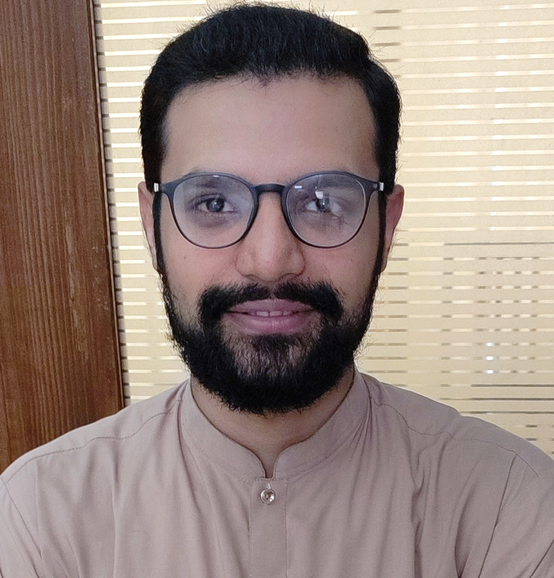
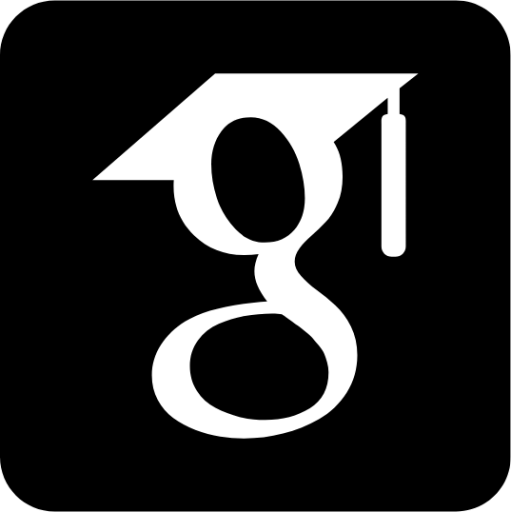
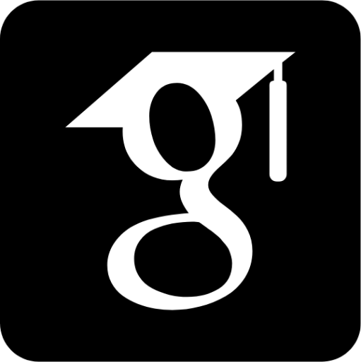

Hassan Ali
PhD Candidate, UNSW

 



I am a candidate for Ph.D. in Computer Science and Engineering (CSE) at the University of New South Wales (UNSW), Sydney. I am supervised by Dr. Salil Kanhere, Dr. Sanjay Jha and Dr. Surya Nepal.
My research interests are diverse.
- I want to enable ML as a product in real-world settings (e.g., ML as a service (supporting encryption standards/protocols), ML on edge).
- I am interested in few-shot media generation, particularly text-to-video generation, using AI.
- I want to build frameworks for reliable and trustworthy Artificial Intelligence (AI) algorithms focused on real-world applications and challenges.
My past research work has largely focused on the trustworthy Machine Learning (ML) algorithms, particularly Deep Neural Networks (DNNs), where the trustworthiness refers to the adversarial robustness, security, privacy, interpretability, alignment and fairness of DNNs.
I can be contacted at: hassan.ali@unsw.edu.au
News:
-
Mar 2024:
Our paper "Adversarial Machine Learning for Social Good: Reframing the Adversary as an Ally" has been accepted for publication at IEEE Transactions on Artificial Intelligence.
-
Nov 2023:
Our paper "Consistent Valid Physically-Realizable Adversarial Attack against Crowd-flow Prediction Models" has been accepted for publication at IEEE Transactions on Intelligent Transporation Systems.
-
Sep 2023:
I have joined UNSW as a PhD candidate. My research will focus on Trustwothy Machine Learning.
-
Aug 2023:
Our paper "Secure and Trustworthy Artificial Intelligence-Extended Reality (AI-XR) for Metaverses" has been accepted at ACM Computing Surveys.
-
Jul 2023:
Our paper "ConDetect: Detecting Adversarially Perturbed Natural Language Inputs to Deep Classifiers Through Holistic Analysis" has been accepted for publication at Computers & Security.
-
Dec 2022:
Our paper "Towards secure private and trustworthy human-centric embedded machine learning: An emotion-aware facial recognition case study" has been accepted for publication at Computers & Security.
-
Jun 2022:
Our paper "Tamp-X: Attacking Explainable Natural Language Classifiers Through Tampered Activations" has been accepted for publication at Computers & Secruity.
Selected Papers:
-
Membership Inference Attacks on DNNs using Adversarial Perturbations
Hassan Ali, Adnan Qayyum, Ala Al-Fuqaha, and Junaid Qadir
arXiv preprint arXiv:2307.05193 (2023).
Links: [Paper] [Code]
-
Consistent Valid Physically-Realizable Adversarial Attack against Crowd-flow Prediction Models
Hassan Ali, Muhammad Atif Butt, Fethi Filali, Ala Al-Fuqaha, and Junaid Qadir
IEEE Transactions on Intelligent Transportation Systems (2023).
Links: [Paper] [Code]
-
Con-detect: Detecting adversarially perturbed natural language inputs to deep classifiers through holistic analysis
Hassan Ali*, Muhammad Suleman Khan*, Amer AlGhadhban, Meshari Alazmi, Ahmad Alzamil, Khaled AlUtaibi, and Junaid Qadir (*equal contribution)
Computers & Security 132 (2023): 103367.
Links: [Paper] [Code]
-
Tamp-X: Attacking explainable natural language classifiers through tampered activations
Hassan Ali*, Muhammad Suleman Khan*, Ala Al-Fuqaha, and Junaid Qadir (*equal contribution)
Computers & Security 120 (2022): 102791.
Links: [Paper] [Code]
-
Fadec: A fast decision-based attack for adversarial machine learning
Faiq Khalid*, Hassan Ali*, Muhammad Abdullah Hanif, Semeen Rehman, Rehan Ahmed, and Muhammad Shafique (*equal contribution)
In 2020 International Joint Conference on Neural Networks (IJCNN), pp. 1-8. IEEE, 2020.
Links: [Paper] [Code]